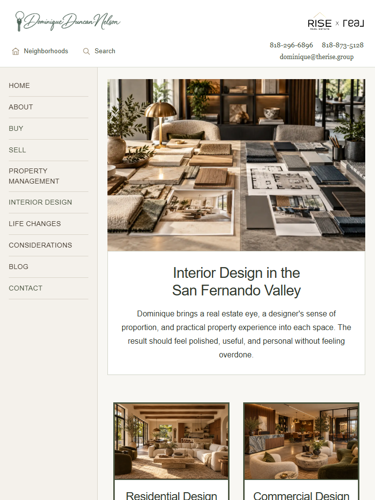
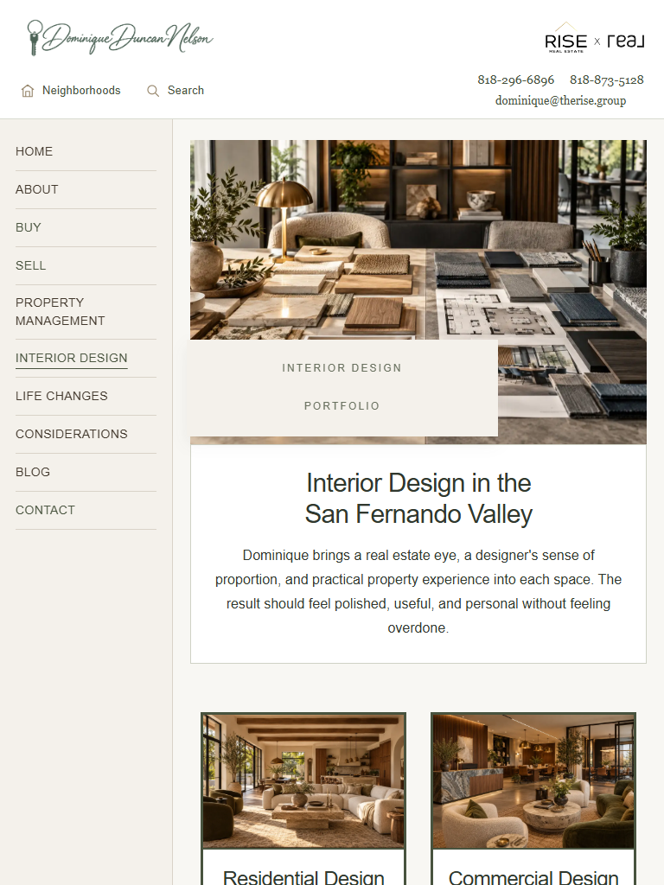
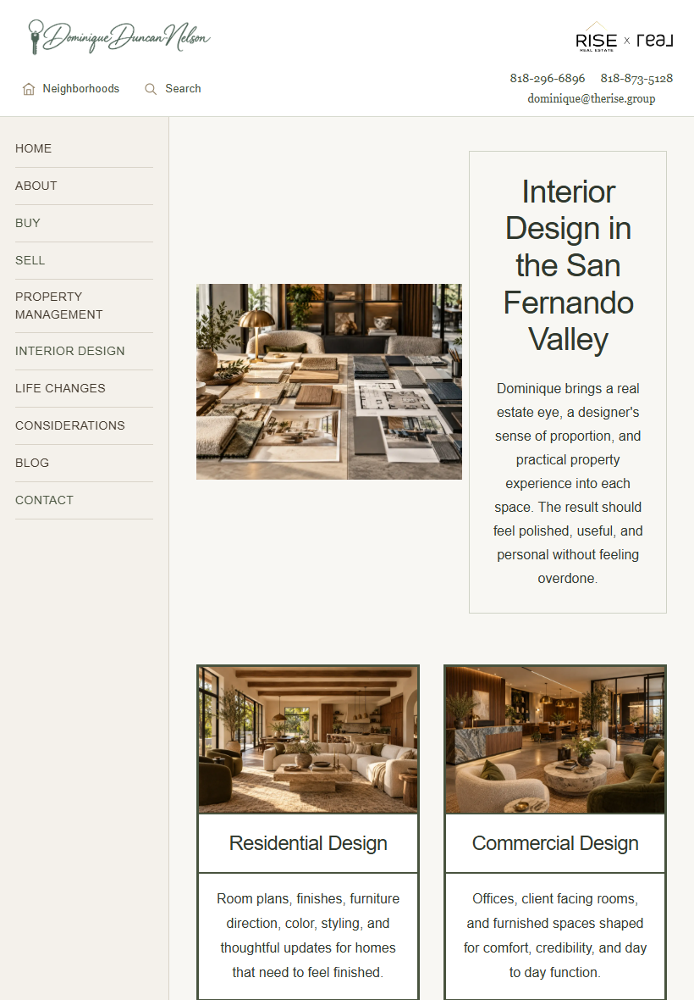
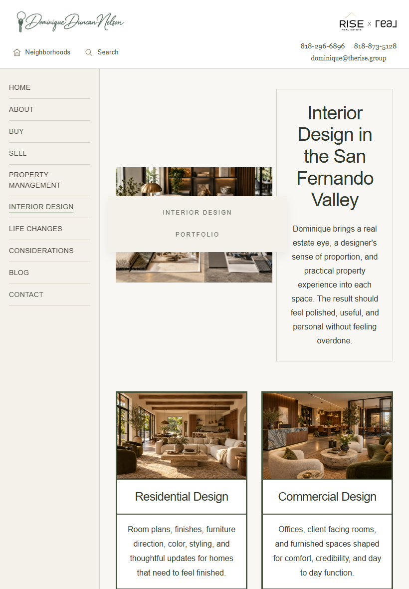
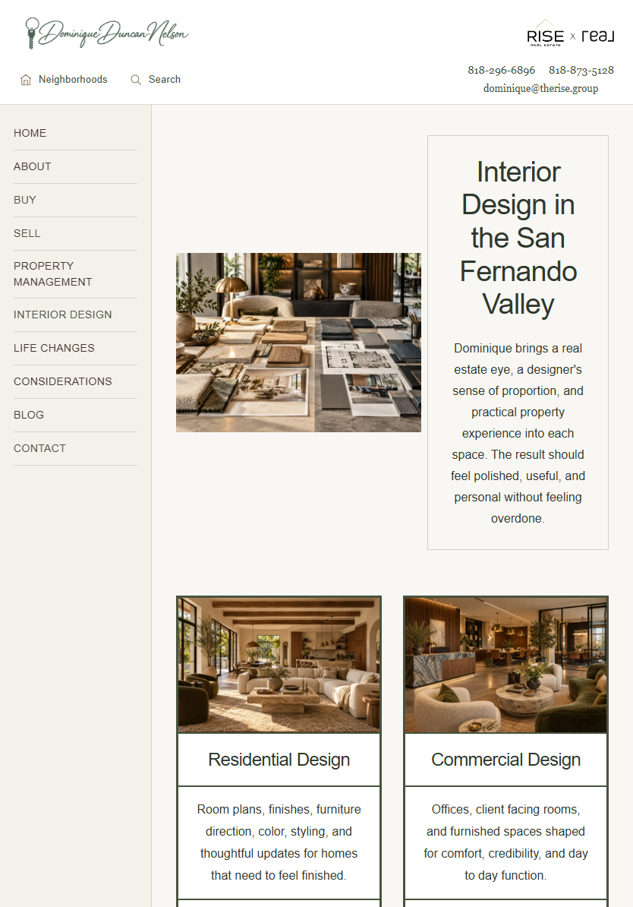
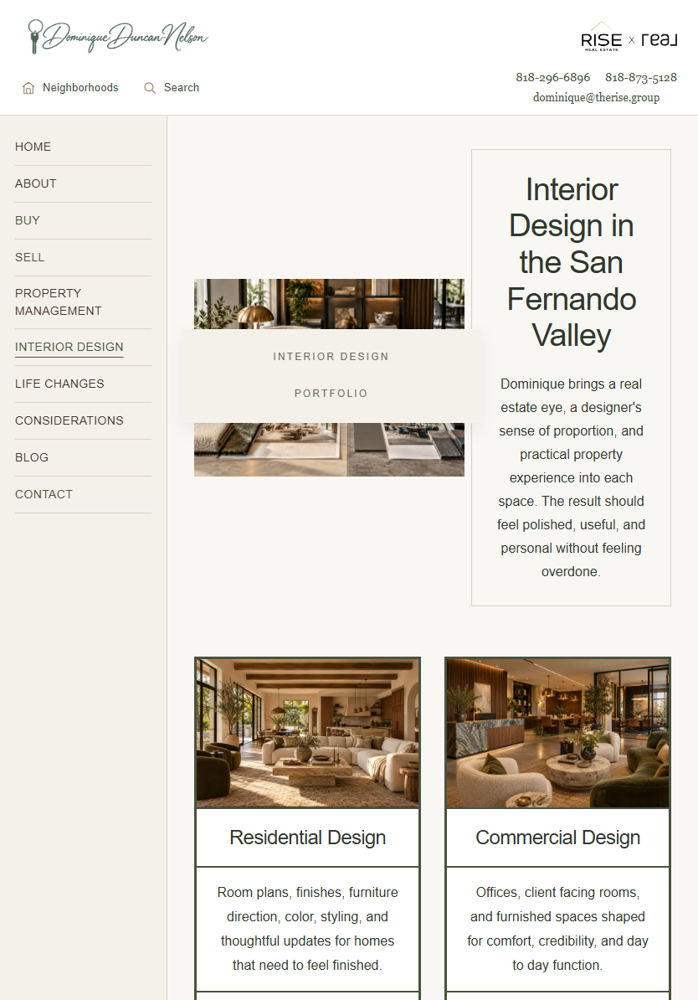
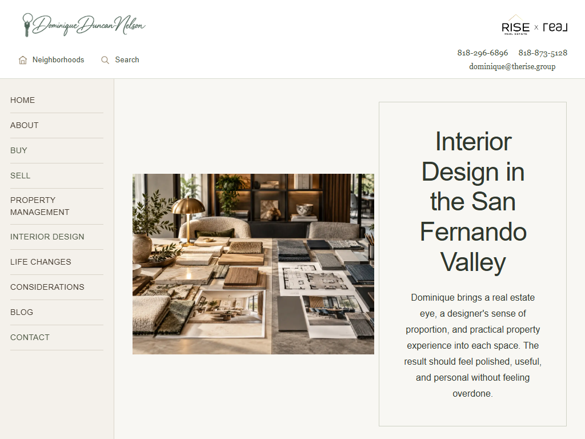
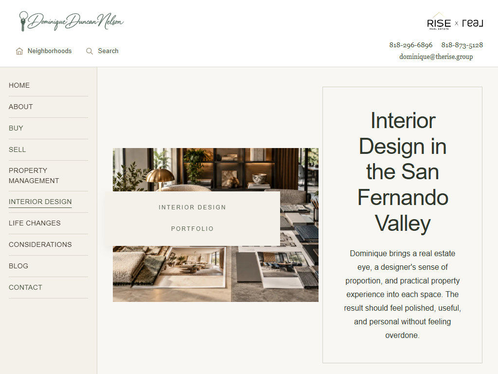
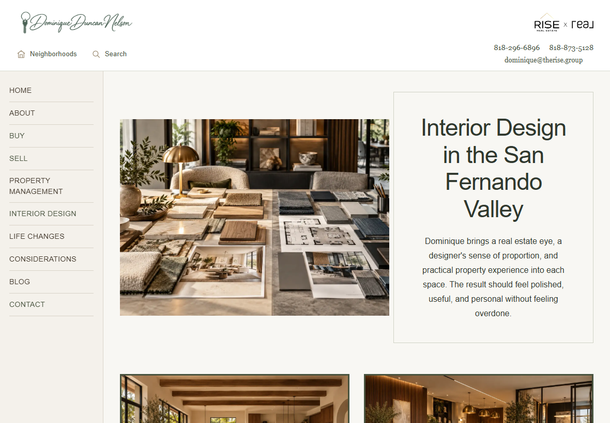
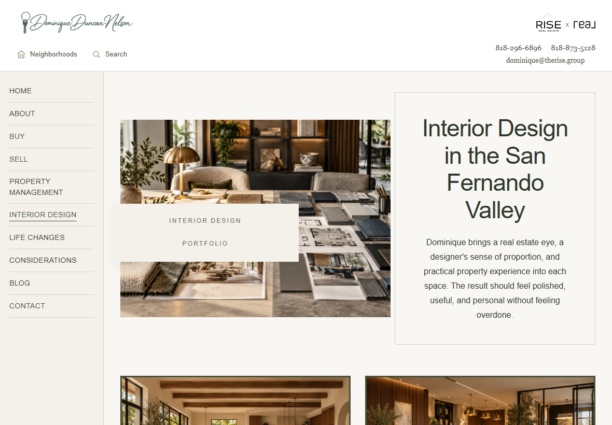

Always-visible vertical navigation at tablet widths. All ten categories are visible in a single column, with readable 14px labels and touch dropdowns. No horizontal navigation scrolling, off-screen links, More button, hamburger, or stacked desktop navigation rows. Neighborhoods and Search stay in the header. Desktop and phone navigation retain their existing presentations. The side panel reserves 200px of tablet width for direct access.









